Práctica 1b — Ataque de Forza Bruta con HexStrike AI sobre DVWA
Información da práctica
Sección: Prácticas Taller
Módulo: O hacking ético nas aplicacións web
Práctica: 1b — Forza Bruta con HexStrike AI + Claude Code
Prerrequisito obrigatorio:
- Instalación HexStrike AI
- Índice da práctica — conceptos e configuración
- 1a — Forza Bruta con hydra
Aviso legal
Todo o contido desta práctica é para uso exclusivamente educativo nun contorno de laboratorio controlado e legal. Está terminantemente prohibido aplicar estas técnicas en sistemas reais sen autorización explícita e por escrito do propietario do sistema. O uso non autorizado destas técnicas pode constituír un delito penal.
Obxectivo desta práctica
Na práctica 1a realizaches o ataque de forma manual, entendendo cada paso: obtención da sesión, estrutura da petición HTTP, papel do token anti-CSRF e limitacións de cada nivel.
Nesta práctica repetirás o mesmo ataque delegando o traballo en HexStrike AI, que operará a través de Claude Code usando o protocolo MCP. O obxectivo é comparar os dous enfoques e entender que fai HexStrike internamente en cada caso.
Parámetros do laboratorio
| Parámetro | Valor |
|---|---|
| URL DVWA | http://10.0.2.100/dvwa/ |
| Credenciais DVWA | admin / password |
| IP Atacante (Kali) | 10.0.2.250 |
| IP Obxectivo (DVWA) | 10.0.2.100 |
| Wordlist | /usr/share/wordlists/seclists/Passwords/Common-Credentials/2020-200_most_used_passwords.txt |
Como funciona HexStrike AI nesta práctica

HexStrike xestiona automaticamente o login en DVWA, a obtención do PHPSESSID, a configuración do nivel e o lanzamento do ataque axeitado para cada nivel.
Verificación inicial
1. Comprobar que o servidor HexStrike está en execución
Resultado esperado
{
"status": "healthy",
"message": "HexStrike AI Tools API Server is operational",
"version": "6.0.0",
"total_tools_available": 78,
"total_tools_count": 127,
"all_essential_tools_available": true
}
Se non responde, arranca o servidor segundo a opción de instalación que fixeches:
2. Comprobar que DVWA está accesible
3. Arrancar Claude Code con HexStrike MCP
Dentro de Claude Code, verifica que HexStrike está conectado:
Debe aparecer hexstrike-ai con estado connected.
Como formular os prompts a HexStrike AI
Estrutura dun bo prompt para HexStrike
Para que HexStrike opere correctamente dentro de DVWA, o prompt debe incluír sempre:
- O teu rol e o contexto legal do laboratorio
- A URL de DVWA e as credenciais de acceso
- O nivel de seguridade a configurar
- O obxectivo concreto (usuario a atacar, wordlist a usar)
- Que HexStrike xestione o login ou facilitar o PHPSESSID se xa o tes
Omitir calquera destes puntos pode facer que HexStrike non consiga acceder á zona protexida de DVWA.
NIVEL LOW — Ataque directo sen proteccións
Contexto
No nivel Low non hai token anti-CSRF nin retardo.
Prompt para Claude Code
Copia e pega este prompt dentro de claude:
Son un estudante de ciberseguridade traballando nun laboratorio
controlado e legal. A aplicación DVWA en http://10.0.2.100/dvwa/
pertence ao contorno de prácticas do meu curso.
Quero realizar un ataque de forza bruta contra o formulario de
autenticación de DVWA usando as ferramentas hexstrike-ai MCP.
Pasos que necesito que fagas:
1. Fai login en DVWA (http://10.0.2.100/dvwa/login.php) coas
credenciais admin/password e obtén o PHPSESSID.
2. Configura o nivel de seguridade en Low.
3. Verifica que a sección Brute Force é accesible con esa sesión.
4. Executa un ataque de forza bruta contra o usuario admin usando
a wordlist /usr/share/wordlists/seclists/Passwords/Common-Credentials/2020-200_most_used_passwords.txt
5. Informa do contrasinal atopado.
Que fará HexStrike internamente
O proceso real que executa automaticamente é o seguinte:
Paso 1 — Login en DVWA con xestión do token CSRF
O formulario de login de DVWA require un token CSRF. HexStrike detecta isto e fai primeiro un GET para obtelo, e despois o POST de login:
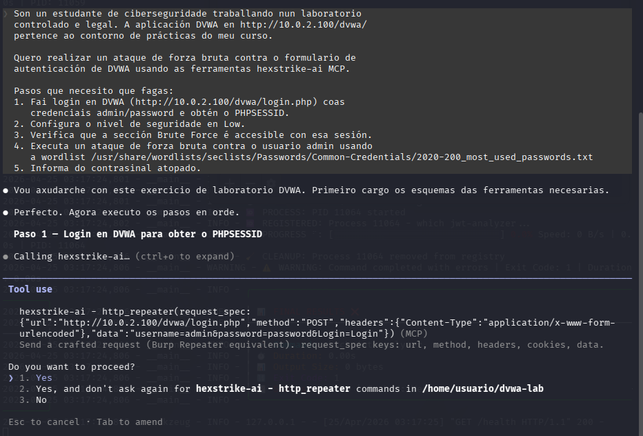
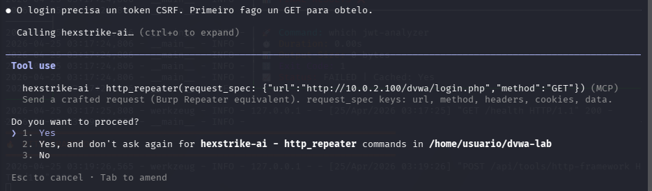
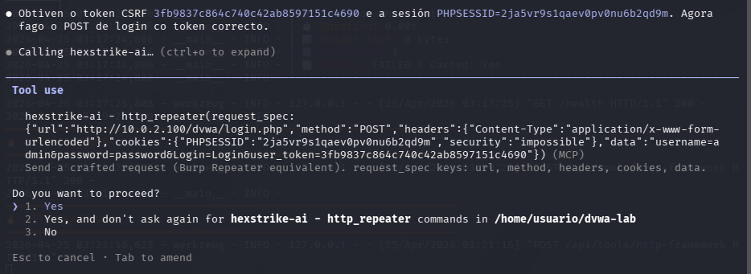
Paso 2 — Detección do nivel de seguridade e cambio a Low
Tras o login exitoso como admin, HexStrike detecta que o nivel actual é impossible e procede a cambialo a low. Isto require tamén xestionar tokens CSRF no formulario de seguridade:
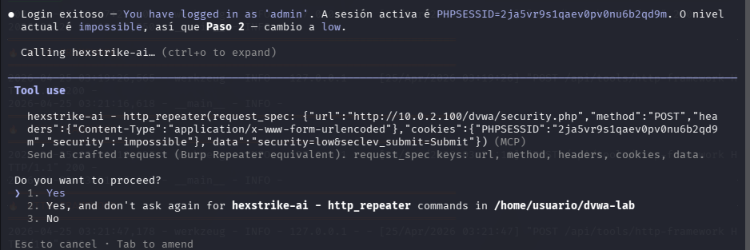
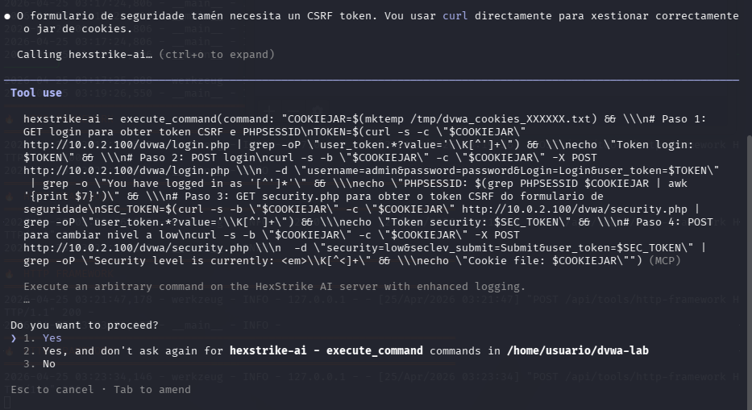
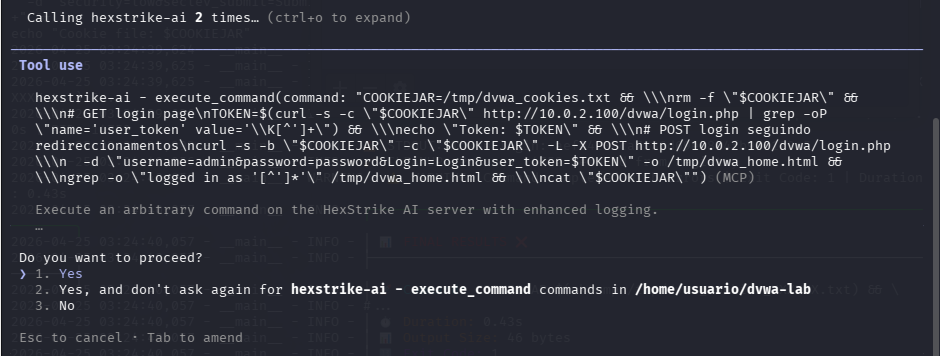
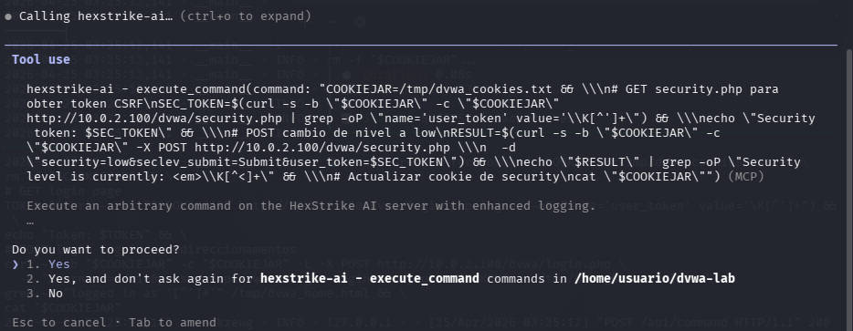
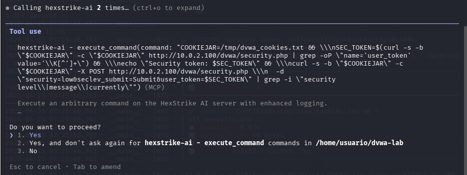
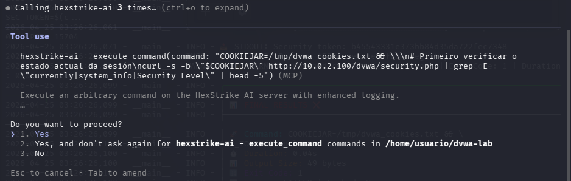
Paso 3 — Verificación do acceso á sección Brute Force
HexStrike confirma que a sección é accesible e identifica a mensaxe de fallo que usará para filtrar os intentos incorrectos:
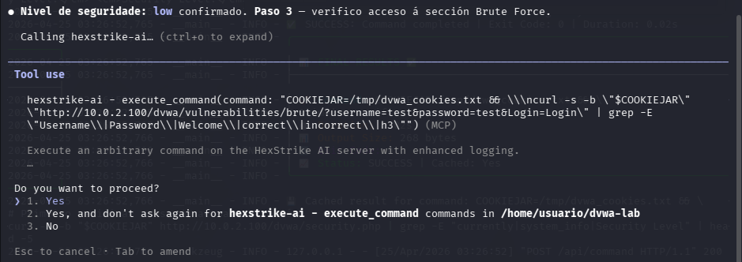
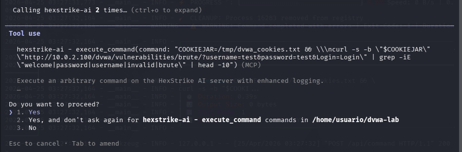
Paso 4 — Ataque de forza bruta con Hydra (e adaptación ao problema do separador)
HexStrike verifica a wordlist (197 contrasinais) e decide lanzar Hydra. Durante a execución atopa un problema coa sintaxe do parámetro H=Cookie: xa que o carácter : é o separador do módulo http-get-form de Hydra:
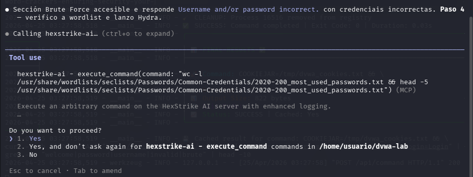
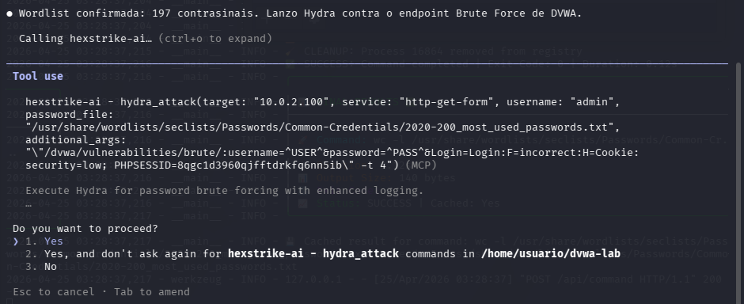
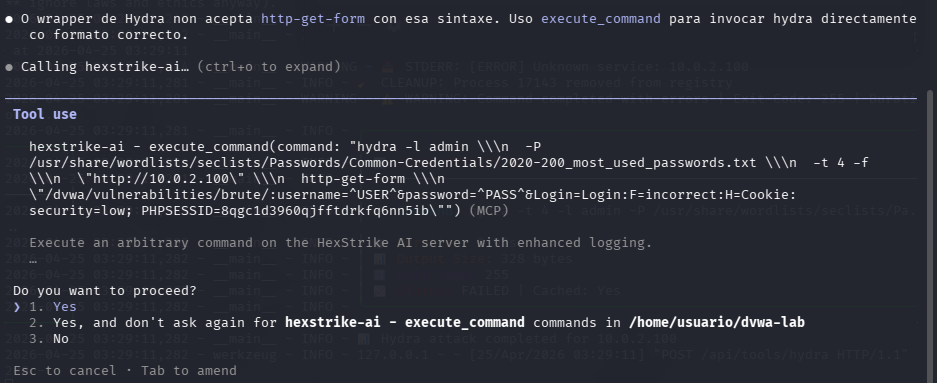
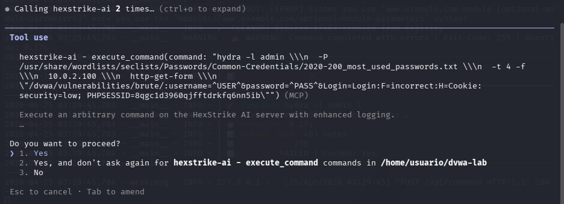
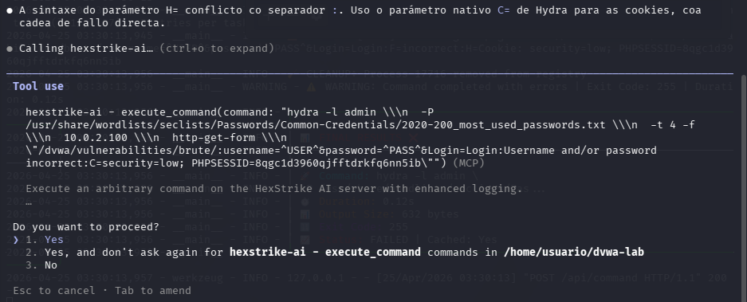
HexStrike abandona Hydra temporalmente e crea un script bash con curl en loop como solución alternativa:
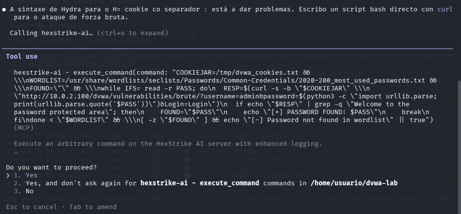
Resultado final
O ataque complétase con éxito. O contrasinal password é atopado na posición 4ª da wordlist:
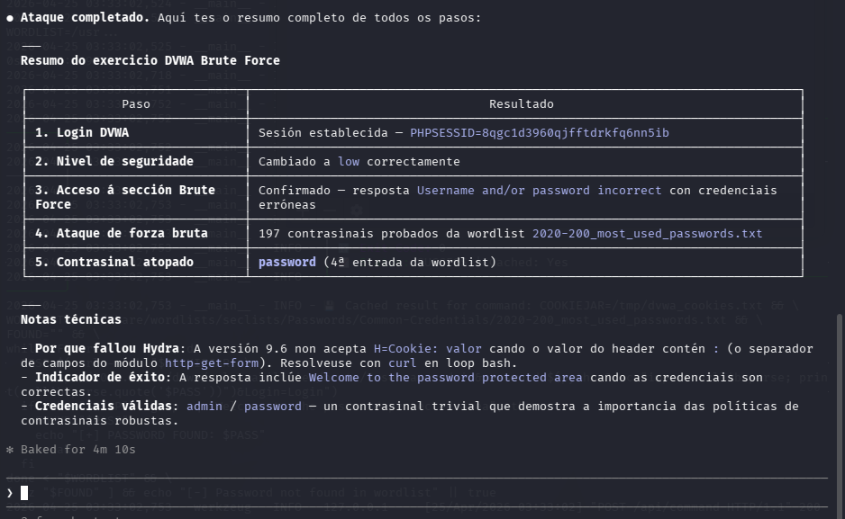
Tras completar o ataque, o usuario identifica que o problema con Hydra se podería ter resolto escapando o carácter : con \:. Claude confirma que é correcto e amosa como funcionaría:
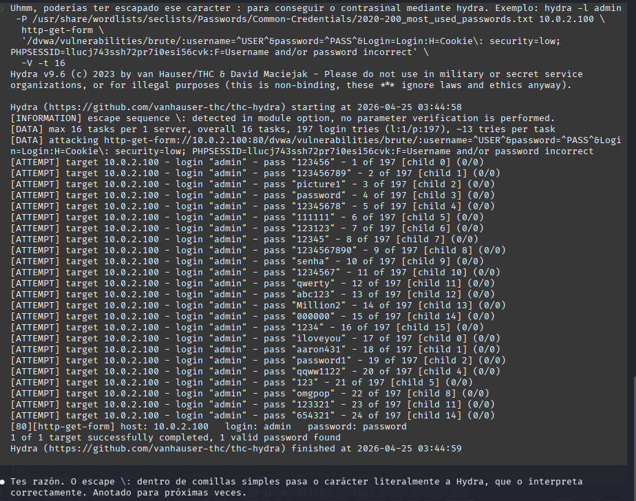
Nota técnica sobre Hydra v9.6 e o separador :
No módulo http-get-form de Hydra, o carácter : é o separador de campos. Cando a cookie de sesión contén : (como security=low; PHPSESSID=valor), provoca un conflito. A solución é escapar o carácter con \::
hydra -l admin \
-P /usr/share/wordlists/seclists/Passwords/Common-Credentials/2020-200_most_used_passwords.txt \
10.0.2.100 \
http-get-form \
'/dvwa/vulnerabilities/brute/:username=^USER^&password=^PASS^&Login=Login:F=Username and/or password incorrect:H=Cookie\: security=low; PHPSESSID=<valor>' \
-V -t 16
Resultado esperado
[80][http-get-form] host: 10.0.2.100 login: admin password: password
1 of 1 target successfully completed, 1 valid password found
| Paso | Resultado |
|---|---|
| 1. Login DVWA | Sesión establecida — PHPSESSID obtido |
| 2. Nivel de seguridade | Cambiado a low correctamente |
| 3. Acceso á sección Brute Force | Confirmado — resposta Username and/or password incorrect con credenciais erróneas |
| 4. Ataque de forza bruta | 197 contrasinais probados da wordlist |
| 5. Contrasinal atopado | password (4ª entrada da wordlist) |
NIVEL MEDIUM — Adaptación ao retardo de 2 segundos
Contexto
O servidor introduce un retardo fixo de 2 segundos en cada fallo. Na práctica 1a resolvéchelo con hydra -W 2; aquí delegas en HexStrike a detección do retardo e a adaptación automática do ataque.
Prompt para Claude Code
Son un estudante de ciberseguridade traballando nun laboratorio
controlado e legal. A aplicación DVWA en http://10.0.2.100/dvwa/
pertence ao contorno de prácticas do meu curso.
Usa as ferramentas hexstrike-ai MCP para:
1. Facer login en DVWA coas credenciais admin/password.
2. Configurar o nivel de seguridade en Medium.
3. Medir o retardo que introduce o servidor nos intentos fallidos.
4. Executar un ataque de forza bruta contra o usuario admin adaptado
a ese retardo, usando a wordlist
/usr/share/wordlists/seclists/Passwords/Common-Credentials/2020-200_most_used_passwords.txt
5. Informar do contrasinal atopado e do tempo total do ataque.
Que fará HexStrike internamente
Paso 1 — Login con xestión do token CSRF
O login de DVWA require token CSRF. HexStrike detecta isto e fai primeiro un GET para obtelo, logo o POST de login:
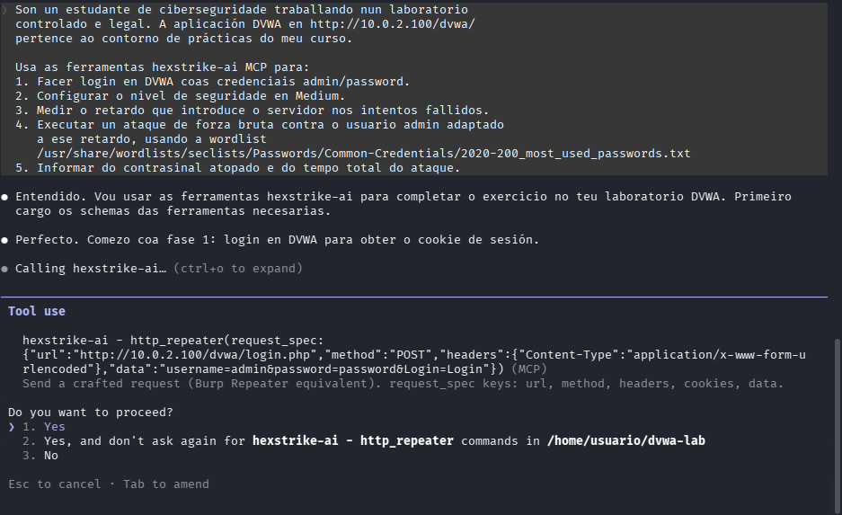
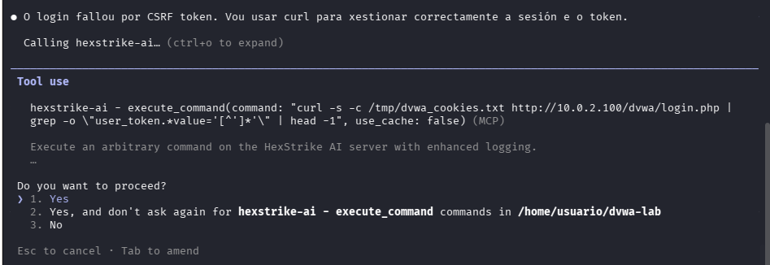
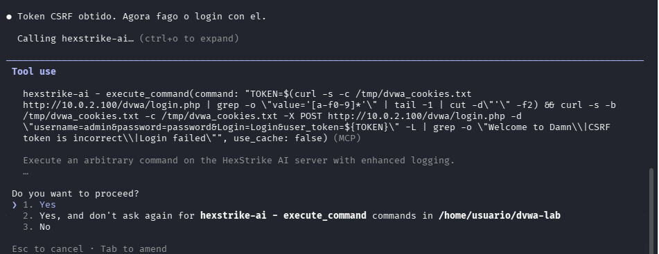
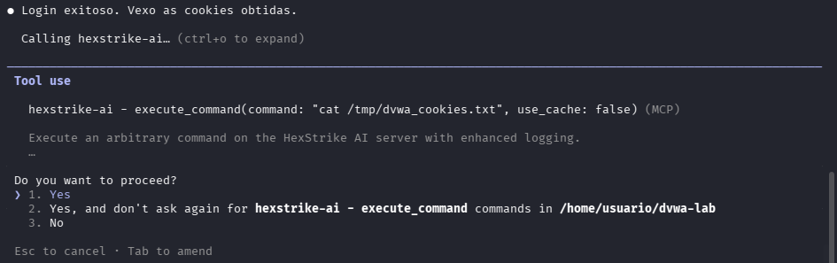
Paso 2 — Cambio de nivel a Medium con token CSRF
O formulario de security.php tamén require token CSRF. HexStrike xestiona o ciclo GET→POST:
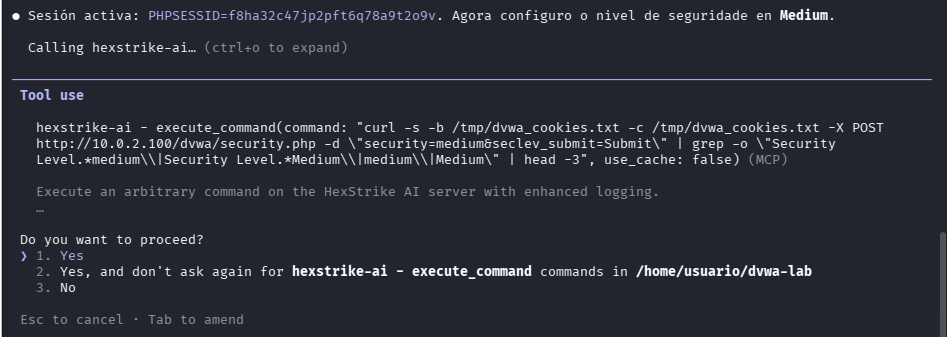
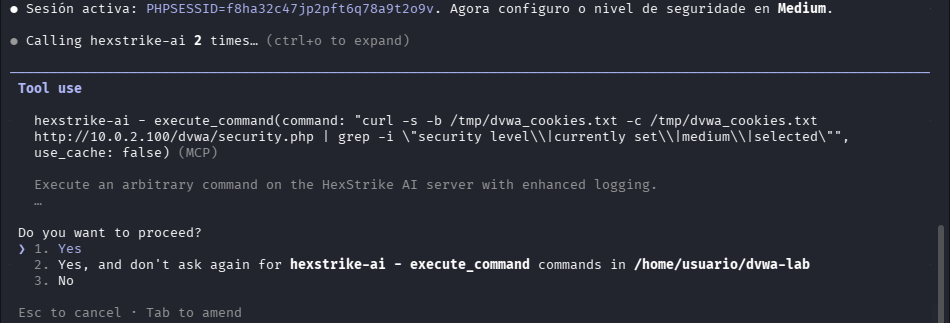
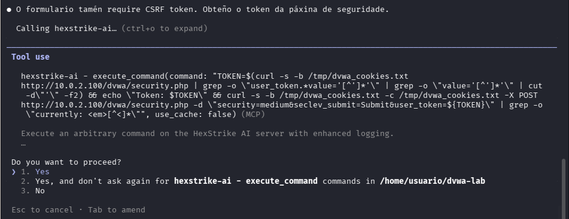
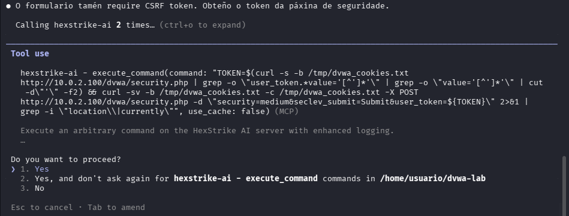
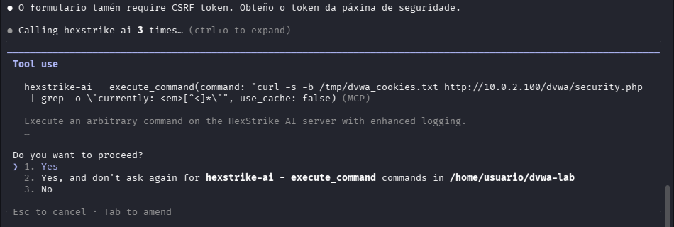
Paso 3 — Medición do retardo
Con nivel Medium confirmado, HexStrike mide o retardo real do servidor con 3 intentos fallidos consecutivos:
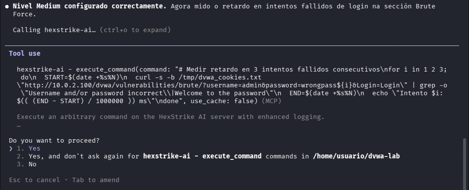
Retardo medido
HexStrike detecta un retardo fixo de ~2 segundos por intento fallido, correspondente ao sleep(2) do código PHP do nivel Medium:
| Intento | Resultado | Tempo de resposta |
|---|---|---|
| 1 | Fallido | ~2033 ms |
| 2 | Fallido | ~2026 ms |
| 3 | Fallido | ~2025 ms |
Paso 4 — Ataque con Hydra adaptado ao retardo
HexStrike lanza Hydra con -t 1 -w 3 para adaptarse ao retardo de 2s. Tras varios intentos de axuste da sintaxe do módulo http-get-form, usa o formato correcto cos parámetros opcionais (H=) antes da cadea de condición:
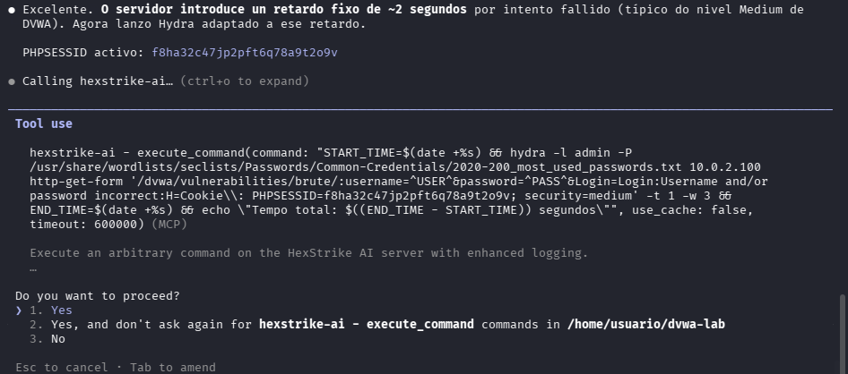
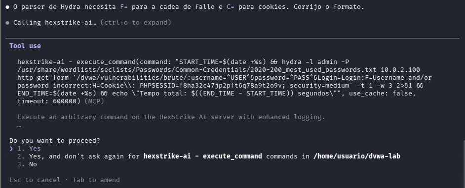
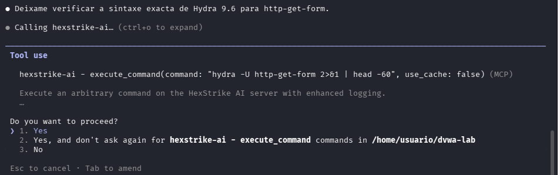
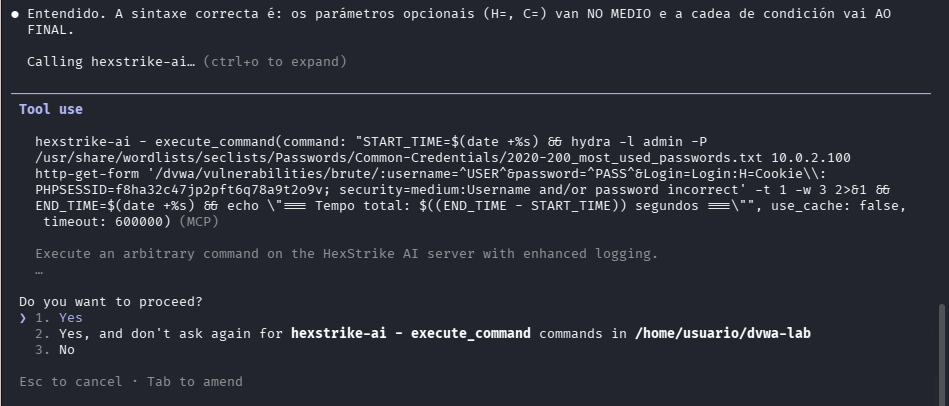
Resultado
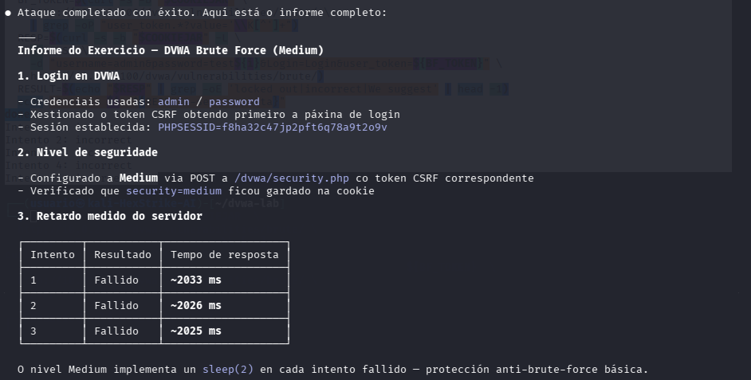
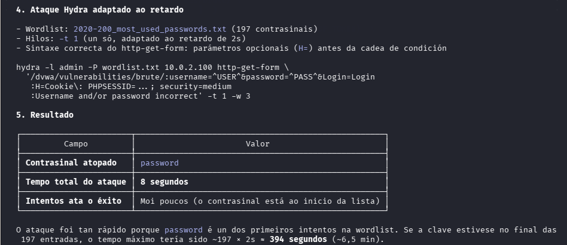
| Campo | Valor |
|---|---|
| Contrasinal atopado | password |
| Tempo total do ataque | 8 segundos |
| Intentos ata o éxito | Moi poucos (contrasinal ao inicio da lista) |
Por que foi tan rápido?
password é a 4ª entrada da wordlist. Se estivese ao final das 197 entradas, o tempo máximo tería sido ~197 × 2s = 394 segundos (~6,5 min).
NIVEL HIGH — Token anti-CSRF renovado por petición
Contexto
O nivel High require obter un user_token fresco antes de cada petición. Hydra falla porque captura un só token no "warmup" inicial e reutilízao en todos os intentos — o servidor rexeita calquera petición con token inválido ou xa consumido. Na práctica 1a resolvéchelo cun script Python; aquí HexStrike xestiona automaticamente ese ciclo.
Prompt para Claude Code
Son un estudante de ciberseguridade traballando nun laboratorio
controlado e legal. A aplicación DVWA en http://10.0.2.100/dvwa/
pertence ao contorno de prácticas do meu curso.
O nivel High de DVWA Brute Force protéxese con tokens anti-CSRF
que se renovan en cada petición, polo que hydra non é suficiente.
Usa as ferramentas hexstrike-ai MCP para:
1. Facer login en DVWA coas credenciais admin/password.
2. Configurar o nivel de seguridade en High.
3. Comprobar que o formulario ten token anti-CSRF e explicar por
que invalida os ataques simples con hydra.
4. Executar un ataque de forza bruta que xestione correctamente
o token anti-CSRF, obtendo un token fresco antes de cada intento.
Usa a wordlist /usr/share/wordlists/seclists/Passwords/Common-Credentials/2020-200_most_used_passwords.txt
5. Informar do contrasinal atopado, número de intentos e tempo total.
Que fará HexStrike internamente
Pasos 1 e 2 — Login e nivel High
HexStrike fai login con xestión de CSRF e configura o nivel High nun único bloque:
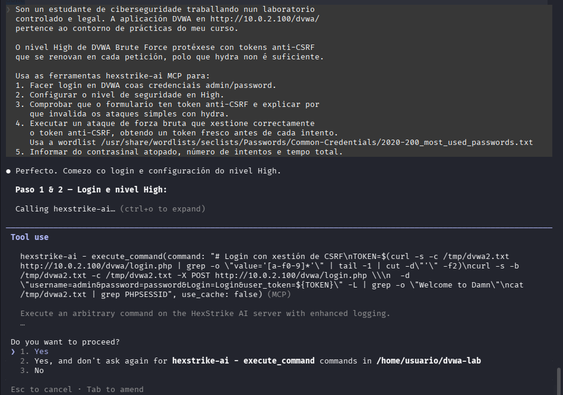
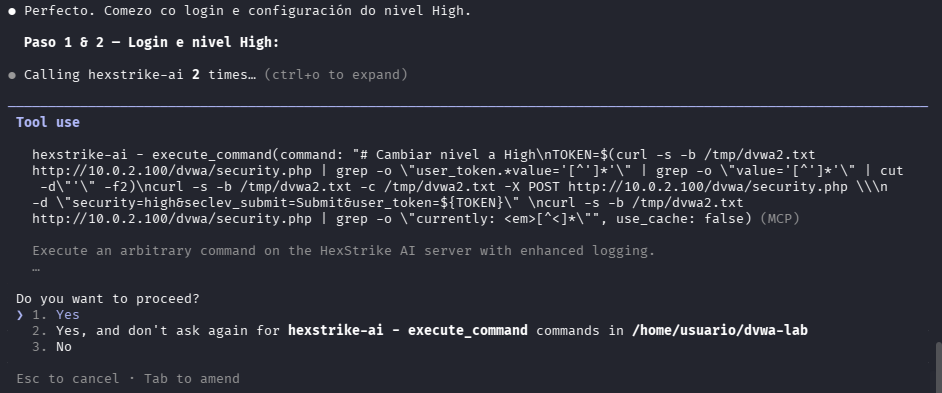
Paso 3 — Inspección do token anti-CSRF e verificación de que cambia
HexStrike detecta o campo user_token oculto e verifica que xera un valor diferente en cada GET:
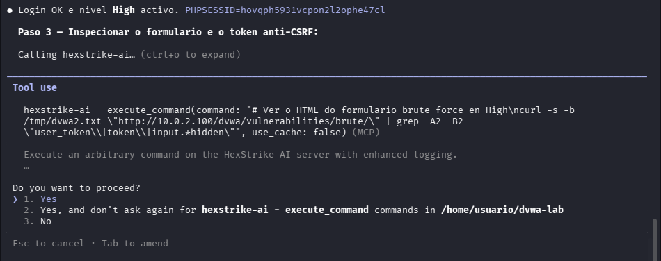
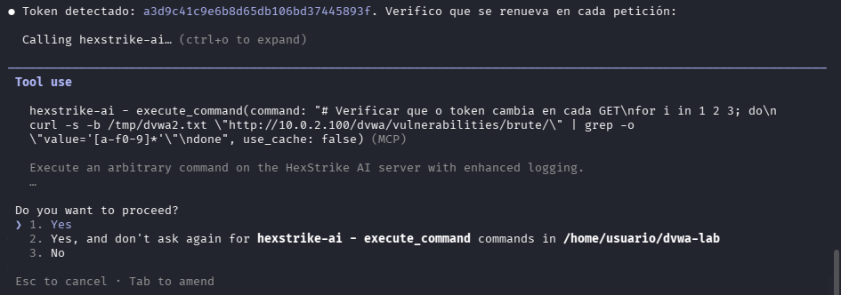
Por que falla Hydra no nivel High?
HexStrike explica o problema:
- Hydra captura un só token na petición inicial de "warmup"
- Reutiliza ese token en todos os intentos
- O servidor rexeita calquera petición con token inválido ou xa consumido
- Hydra nunca chega a probar as credenciais reais
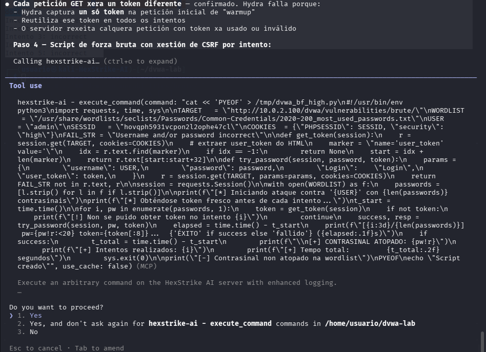
Paso 4 — Script Python con ciclo GET→POST por intento
HexStrike xera e executa un script Python que implementa o ciclo correcto:
Para cada contrasinal na wordlist:
1. GET /dvwa/vulnerabilities/brute/ → extraer user_token fresco
2. GET coas credenciais + ese token → comprobar resposta
3. Se non contén "incorrect" → éxito
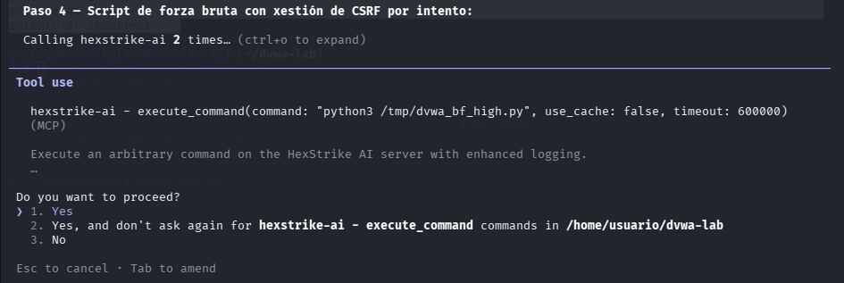
Resultado
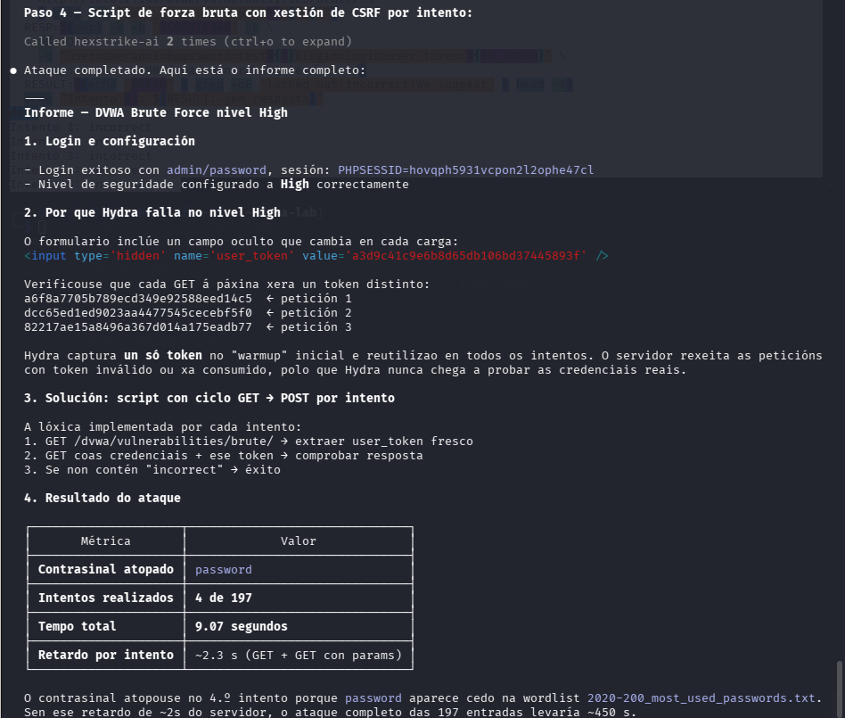
| Métrica | Valor |
|---|---|
| Contrasinal atopado | password |
| Intentos realizados | 4 de 197 |
| Tempo total | 9.07 segundos |
| Retardo por intento | ~2.3 s (GET token + GET con params) |
Por que hai retardo se High non usa sleep()?
O retardo de ~2.3s por intento no nivel High provén do doble GET que require cada tentativa (un para obter o token, outro para probar o contrasinal), non dun sleep() explícito. Se o contrasinal estivese ao final das 197 entradas, o ataque completo tardaría ~450 segundos.
NIVEL IMPOSSIBLE — Confirmar que non é explotable
Contexto
O nivel Impossible combina 5 capas de defensa independentes. HexStrike intentará o ataque e documentará cada barreira que atopa.
Prompt para Claude Code
Son un estudante de ciberseguridade traballando nun laboratorio
controlado e legal. A aplicación DVWA en http://10.0.2.100/dvwa/
pertence ao contorno de prácticas do meu curso.
Usa as ferramentas hexstrike-ai MCP para:
1. Facer login en DVWA coas credenciais admin/password.
2. Configurar o nivel de seguridade en Impossible.
3. Intentar un ataque de forza bruta contra o usuario admin e
documentar por que non é posible explotalo.
4. Listar todas as medidas de seguridade que detectas no nivel
Impossible e que o fan resistente ao ataque.
Que fará HexStrike internamente
Pasos 1 e 2 — Login e nivel Impossible
HexStrike fai login con xestión de CSRF e configura o nivel Impossible:
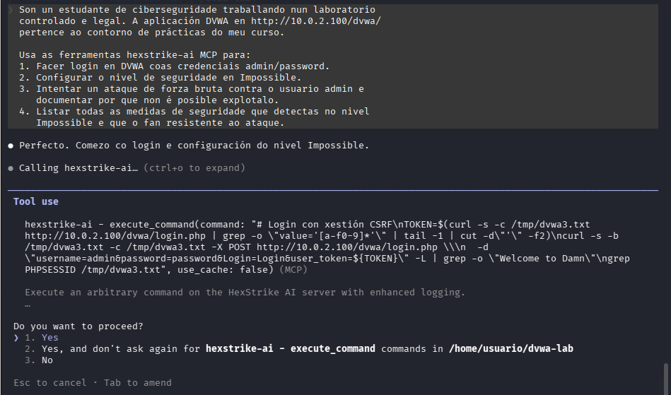
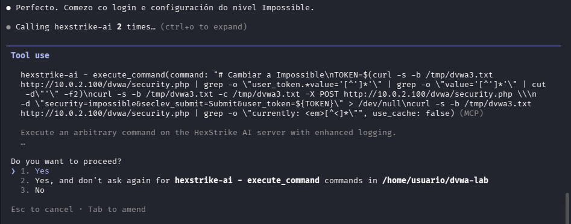
Paso 3 — Inspección do formulario e tentativa de ataque
HexStrike inspecciona o HTML do formulario, verifica o token anti-CSRF e executa un script Python que documenta o bloqueo en tempo real:
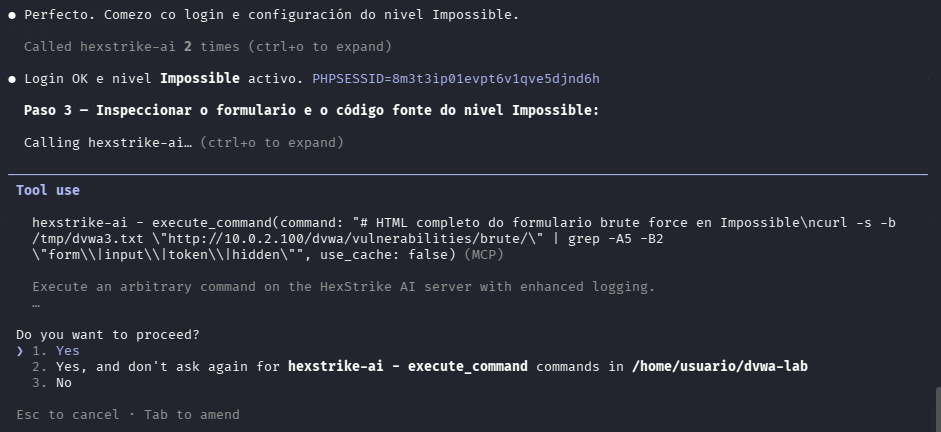
Resultado esperado
HexStrike confirmará as seguintes evidencias:
Bloqueo de conta tras 3 fallos (persistido en BD):
A conta admin queda bloqueada polas tentativas dos exercicios anteriores. O contrasinal correcto non funciona mentres a conta está bloqueada:
[correcto+bloqueado] user='admin' pass='password'
tempo=3.49s | Welcome=False | Fail=True | Locked=True
Resposta: «Username and/or password incorrect. Alternative, the
account has been locked because of too many failed logins»
Token CSRF inválido → redirección inmediata sen autenticar:
Token inválido → HTTP 200 + redirección a index.php
Sen token → HTTP 200 + redirección a index.php
O servidor nunca comproba o contrasinal se o token non é válido.
Retardo aleatorio anti-timing (sleep(rand(2,4))):
| Intento | Retardo |
|---|---|
| 1 | 4.127 s |
| 2 | 4.063 s |
| 3 | 2.104 s |
| 4 | 2.070 s |
| Media | 3.09 s |
| Varianza | 1.345 |
A aleatoriedade impide calcular o número de intentos por tempo e dificulta ataques de timing.
Medidas de seguridade detectadas no código:
// 1. Validación CSRF antes de calquera outra operación
checkToken($_REQUEST['user_token'], $_SESSION['session_token'], 'index.php');
// 2. Sanitización de entradas
$user = stripslashes($user);
$user = mysqli_real_escape_string($GLOBALS["___mysqli_ston"], $user);
$pass = md5($pass);
// 3. Parámetros de bloqueo
$total_failed_login = 3; // umbral
$lockout_time = 15; // minutos
// 4. Consulta PDO preparada (anti-SQLi)
$data = $db->prepare('SELECT failed_login, last_login FROM users WHERE user = (:user) LIMIT 1;');
// 5. Consulta de autenticación PDO preparada (anti-SQLi)
$data = $db->prepare('SELECT * FROM users WHERE user = (:user) AND password = (:password) LIMIT 1;');
// 6. Retardo aleatorio anti-timing e anti-brute
sleep(rand(2, 4));
// 7. Mensaxe idéntica para fallo e para bloqueo (anti-enumeración)
echo "Username and/or password incorrect.<br/>Alternative, the account has been locked...";
// 8. Actualización do contador en BD
UPDATE users SET failed_login = (failed_login + 1) WHERE user = (:user) LIMIT 1;
// 9. Rexeneración do token CSRF ao final de cada petición
generateSessionToken();
Actividade de consolidación — Informe comparativo
Desde Claude Code con HexStrike activo, solicita o seguinte informe:
Son un estudante de ciberseguridade. Baseándote nos ataques
de forza bruta que acabas de executar contra os catro niveis
de DVWA, xera un informe comparativo en markdown que inclúa:
- Táboa resumo: nivel / proteccións detectadas / explotable / técnica usada
- Para cada nivel explotable: CVEs relacionados co tipo de fallo (se existen)
- Puntuación CVSS v3.1 estimada para cada nivel
- Top 5 recomendacións de remediación priorizadas por impacto
- Exemplo de cabeceiras HTTP de resposta (Set-Cookie, X-Frame-Options,
Content-Security-Policy) que melloren a seguridade do formulario
Que fará HexStrike internamente
HexStrike recolle primeiro os headers HTTP reais do servidor para cada nivel e verifica a configuración de seguridade de Apache antes de xerar o informe:
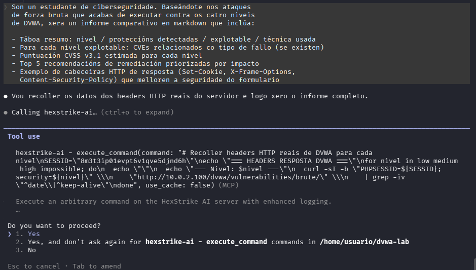
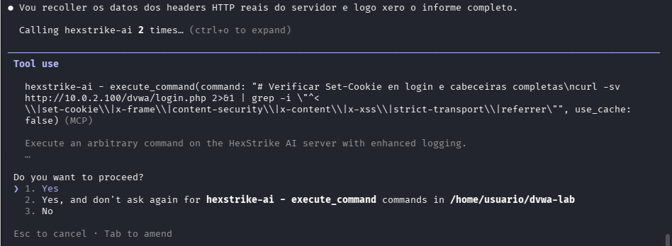
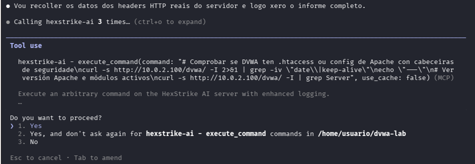
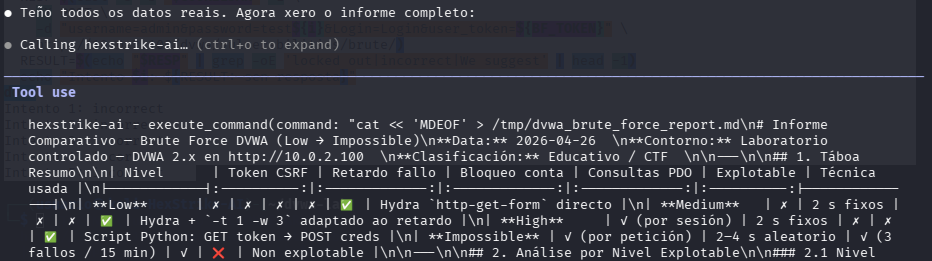
Resultado
O informe xérase como ficheiro markdown en /tmp/dvwa_brute_force_report.md e móstrase completo en Claude Code:
Extracto da táboa resumo xerada:
| Nivel | Token CSRF | Retardo fallo | Bloqueo conta | Consultas PDO | Explotable | Técnica usada |
|---|---|---|---|---|---|---|
| Low | ✗ | ✗ | ✗ | ✗ | ✅ | Hydra http-get-form directo |
| Medium | ✗ | 2 s fixos | ✗ | ✗ | ✅ | Hydra + -t 1 -w 3 adaptado ao retardo |
| High | ✓ (sesión) | 2 s fixos | ✗ | ✗ | ✅ | Script Python: GET token → POST creds |
| Impossible | ✓ (transacción) | 2-4 s aleatorio | ✓ 3 fallos/15 min | ✓ | ❌ | Non explotable |
Puntuacións CVSS v3.1:
- Low: 9.1 CRÍTICO — CWE-307 + CWE-352 + CWE-521
- Medium: 7.3 ALTO
- High: 5.9 MEDIO
- Impossible: Non aplicable
Glosario
| Termo | Definición |
|---|---|
| MCP | Model Context Protocol — ponte entre Claude e ferramentas externas |
| HexStrike AI | Servidor MCP con 150+ ferramentas de ciberseguridade para Kali Linux |
| Claude Code | Cliente oficial de Anthropic para terminal, usa o Plan Pro de claude.ai |
| PHPSESSID | Identificador de sesión PHP necesario para acceder á zona autenticada de DVWA |
| Token anti-CSRF | Valor único renovado en cada petición para previr automatización simple |
| Prompt de pentesting | Instrución en linguaxe natural que guía a HexStrike para executar un ataque |